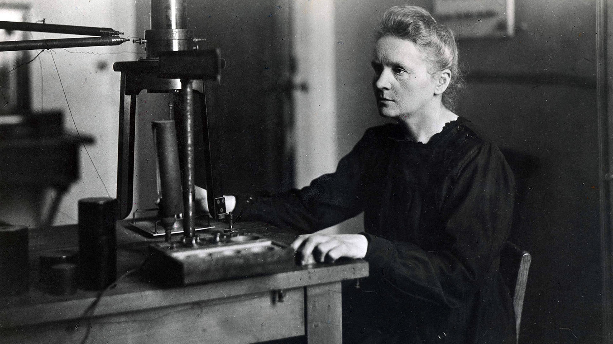

Aprendamos de Historia
Nuestras ideas tambien pueden cambiar el mundo.
Cada semana conoceras como personas del común llevaron sus habilidades a lo mas alto

Marie Curie
Maria Salomea Skłodowska-Curie, más conocida como Marie Curie o Madame Curie, fue una física y química polaca nacionalizada francesa. Pionera en el campo de la radiactividad, es la primera y única persona en recibir dos premios Nobel en distintas especialidades científicas: Física y Química. Wikipedia
Nacimiento: 7 de noviembre de 1867, Varsovia, Polonia
Fallecimiento: 4 de julio de 1934, Passy, Francia
Descubrimientos: Radio, Polonio
Premios: Premio Nobel de Física, Premio Nobel de Química,